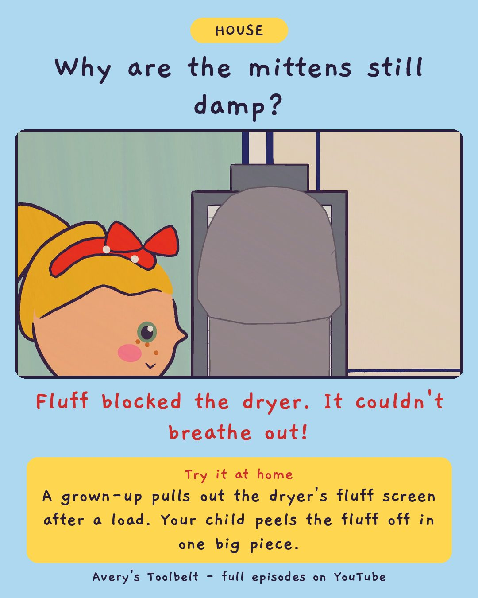

The Full BasketWhy Won't the Dryer Dry?
滿滿的那籃

Why are the mittens still damp?
Fluff blocked the dryer. It couldn't breathe out!
Try it at home
A grown-up pulls out the dryer's fluff screen after a load. Your child peels the fluff off in one big piece.
Free printable coloring page (PDF) Watch the full episode on YouTubeAbout this episode, for grown-ups
The laundry basket has been full for a week - full of clean clothes that are still a bit damp. Avery decides the dryer is broken. But it still goes round, and it still gets hot. And Mom realizes she has been running every load twice for two weeks without noticing.
Mom pulls out the flat screen at the front of the dryer, and Avery peels off the fluff in one whole gray sheet. Gus names it Cloud and carries it on two flat hands for the rest of the afternoon. Then they go outside to find the little flap on the side of the house, and watch it puff.
What children find out: a dryer blows warm air through the clothes and out again, carrying the wet with it. If the fluff blocks the way out, the clothes stay damp and the machine gets hot - so the screen gets cleaned before every load.
For grown-ups: an episode about a slow change nobody noticed, and a fix that takes four seconds. "Nothing ever goes bang. It just gets slower."